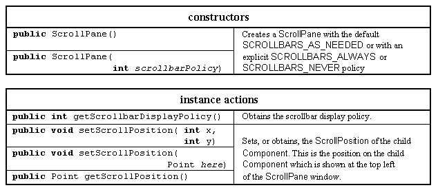

The
ScrollPane
class

The ScrollPane class is a composite component which supplies a window with horizontal and vertical ScrollBars which can be automatically configured to control the view of a single underlying component.